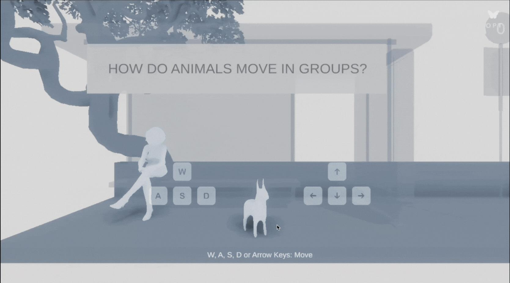
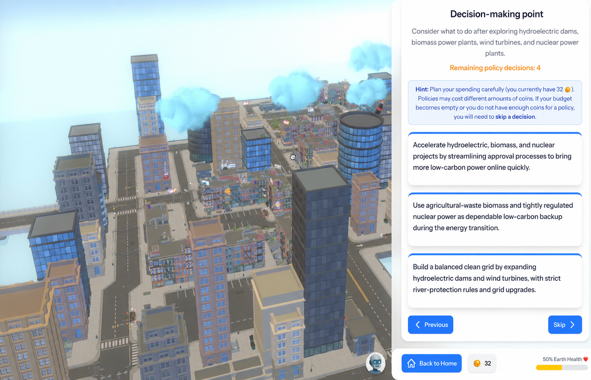
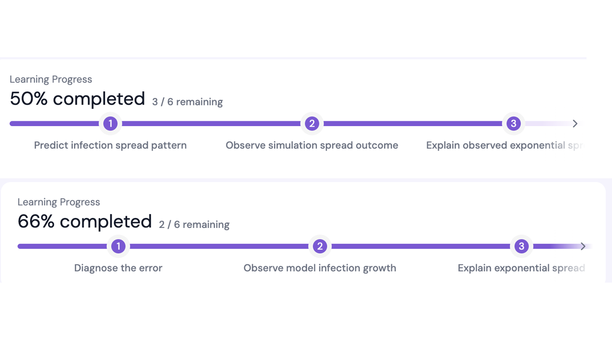

Research Program
SMILE 🧩
Systems Modeling in Intelligent Learning Environment
Learn complex systems by stepping inside them.
Three interactive worlds connect simulation, learner agency, and AI supported dialogue. Learners
explore emergence, make decisions under uncertainty, and explain how systems change.

🐑 Flocking

🌍 Climate

🦠 Epidemics
Explore the program
Three worlds. Three forms of agency.
Select a project to see how its system, learner action, and AI role fit together.
🐑 Flocking
🌍 Climate
🦠 Epidemics
Project 01
Flocking Simulator
Follow your curiosity and uncover how local interactions create collective patterns.
System Animal flocking and emergence
Learner action Explore freely and manipulate interaction rules
AI role On demand Butterfly Tutor grounded in PAIR-C
Enter the Flocking Simulator →
Project 02
Climate Change Simulator
Take a perspective, weigh competing priorities, and watch the planet respond.
System Climate dynamics and policy trade-offs
Learner action Choose a role and invest limited Power Coins
AI role Context aware tutor Bobby explains each consequence
Enter the Climate Change Simulator →
Project 03
EpiSimulator
Adjust interventions, slow the spread, and explain why the outbreak changes course.
System Epidemic spread and public health measures
Learner action Manipulate parameters and monitor learning milestones
AI role Inquiry driven peer or misconception driven teachable agent
Enter EpiSimulator →
A connected research program
From noticing patterns to explaining change
Each project advances a shared investigation of how agency can be designed and supported.
01
Flocking
Explore emergence
Trace how local interactions produce stable or changing group patterns.
02
Climate
Decide under trade-offs
Evaluate policies from a chosen perspective and confront their consequences.
03
Epidemics
Construct explanations
Test interventions and reason with an AI agent about nonlinear change.
Research throughline
How can AI supported simulations help learners understand complex systems while making meaningful, informed choices?
Conceptual understanding
Learner agency
Human AI interaction